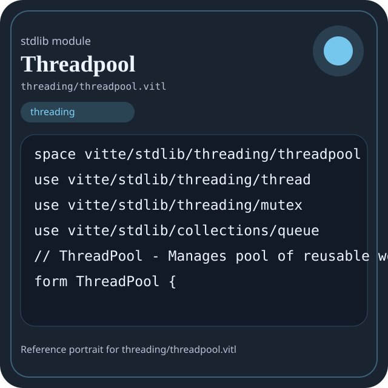

Stdlib module threading/threadpool.vitl
This page is a wiki-style reference for one concrete stdlib file. It explains what the file owns, where it fits in the family, and how to decide whether this is the right surface to depend on.

threading/threadpool.vitl.Family: threading
Kind: public stdlib surface
Page style: this reference follows the same “encyclopedic card + portrait + usage contract” logic as the keyword pages, but for stdlib modules.
Summary
- Overview
- Purpose
- Taxonomy
- Implementation profile
- Top-level API inventory
- Position in family
- Declaration map
- Representative signatures
- How to use this module
- User example
- Keyword coverage
- Source shape
- Source landmarks
- Source organization
- Complete API catalog
- Integration boundaries
- Composition guidance
- Relationship table
- Neighbor modules
Overview
| Field | Value |
|---|---|
| Path | threading/threadpool.vitl |
| Family | threading |
| Kind | public stdlib surface |
| Line count | 361 |
| Declared procedures | 31 |
| Declared forms/picks | 6 |
`threading/threadpool.vitl` is a public stdlib surface inside the `threading` family. It should be read as one focused slice of the broader family responsibility: Thread, mutex, and pool-based concurrency helpers.
Purpose
This file should be chosen because of responsibility, not because its name “sounds close enough”. Inside the threading family, it carries one focused part of the contract and keeps that responsibility separate from neighboring concerns.
- Use this module when coordination and scheduling are explicit parts of the design.
- A worker pool can process tasks in parallel while leaving task definition and result aggregation elsewhere.
Taxonomy
Think of this page as a generated encyclopedia entry rather than a hand-written tutorial. The goal is to show what kind of module this is, how dense it is, and what reading strategy makes sense before depending on it.
- Large algorithm surface: this file exposes many procedures and likely acts as a domain toolkit rather than a single thin wrapper.
- Owns domain vocabulary: the module declares data shapes in addition to executable helpers, so its types are part of the contract.
- Has tuning constants: part of the module behavior is controlled by named constants that document default precision, limits, or policy.
- Narrow dependency fan-in: a small set of imports suggests a focused collaboration surface.
Implementation profile
This profile is inferred directly from the source text. It does not replace reading the file, but it tells you quickly whether the module is mostly declarative, loop-heavy, branch-heavy, or organized around many small exits.
| Signal | Count | What it suggests |
|---|---|---|
if | 5 | Branching density and local decision-making. |
while | 9 | Loop-heavy or iterative implementation style. |
for | 5 | Collection-style traversal at source level. |
match | 0 | Variant-driven branching or grammar-style decoding. |
let | 23 | Local state and intermediate value density. |
give | 34 | Number of explicit exit points and result shaping. |
Top-level API inventory
| Surface | Items |
|---|---|
| Procedures | threadpool_new, threadpool_submit, threadpool_submit_future, threadpool_pending_tasks, threadpool_wait_all, threadpool_wait_timeout, threadpool_active_tasks, threadpool_resize, threadpool_stats, threadpool_shutdown, threadpool_shutdown_immediate, forkjoin_create |
| Forms | ThreadPool, Task, ThreadPoolStats, ForkJoinTask, ScheduledTask, Thread |
| Picks | none declared at top level |
| Constants | POOL_ID_COUNTER, TASK_ID_COUNTER, FORKJOIN_ID_COUNTER, SCHEDULED_ID_COUNTER |
| Exports | none declared at top level |
Imported surfaces
vitte/stdlib/threading/thread use vitte/stdlib/threading/mutex use vitte/stdlib/collections/queue // ThreadPool
Position in family
This file is module 3 of 3 in the threading family when ordered by path. By procedure count it ranks 1, and by line count it ranks 1. Those ranks are useful as rough signals of breadth, not as quality judgments.
Declaration map
The declaration map turns raw source into a scan-friendly catalog. It is useful when the file is large enough that a reader wants to orient by kinds of surfaces first.
| Line | Name | Kind | Role |
|---|---|---|---|
| 1 | vitte/stdlib/threading/threadpool | space | Declares the namespace that anchors this file in the stdlib tree. |
| 3 | vitte/stdlib/threading/thread | use | Imports a sibling or supporting surface used by the module. |
| 4 | vitte/stdlib/threading/mutex | use | Imports a sibling or supporting surface used by the module. |
| 5 | vitte/stdlib/collections/queue | use | Imports a sibling or supporting surface used by the module. |
| 9 | ThreadPool | form | Introduces a structured data shape that other procedures can exchange. |
| 20 | Task | form | Introduces a structured data shape that other procedures can exchange. |
| 32 | threadpool_new | proc | Represents one top-level surface in the file contract and should be read as part of the module boundary. |
| 57 | threadpool_submit | proc | Represents one top-level surface in the file contract and should be read as part of the module boundary. |
| 69 | threadpool_submit_future | proc | Owns coordination, scheduling, or concurrency behavior. |
| 74 | threadpool_pending_tasks | proc | Represents one top-level surface in the file contract and should be read as part of the module boundary. |
| 79 | threadpool_wait_all | proc | Represents one top-level surface in the file contract and should be read as part of the module boundary. |
| 88 | threadpool_wait_timeout | proc | Represents one top-level surface in the file contract and should be read as part of the module boundary. |
| 102 | threadpool_active_tasks | proc | Represents one top-level surface in the file contract and should be read as part of the module boundary. |
| 116 | threadpool_resize | proc | Represents one top-level surface in the file contract and should be read as part of the module boundary. |
| 139 | ThreadPoolStats | form | Introduces a structured data shape that other procedures can exchange. |
| 149 | threadpool_stats | proc | Represents one top-level surface in the file contract and should be read as part of the module boundary. |
| 169 | threadpool_shutdown | proc | Represents one top-level surface in the file contract and should be read as part of the module boundary. |
| 183 | threadpool_shutdown_immediate | proc | Represents one top-level surface in the file contract and should be read as part of the module boundary. |
| 196 | ForkJoinTask | form | Introduces a structured data shape that other procedures can exchange. |
| 204 | forkjoin_create | proc | Represents one top-level surface in the file contract and should be read as part of the module boundary. |
| 216 | forkjoin_fork | proc | Represents one top-level surface in the file contract and should be read as part of the module boundary. |
| 228 | forkjoin_join | proc | Owns path semantics, traversal, or normalization. |
| 240 | ScheduledTask | form | Introduces a structured data shape that other procedures can exchange. |
| 251 | scheduled_task_new | proc | Represents one top-level surface in the file contract and should be read as part of the module boundary. |
| 266 | scheduled_task_start | proc | Represents one top-level surface in the file contract and should be read as part of the module boundary. |
| 274 | scheduled_task_stop | proc | Represents one top-level surface in the file contract and should be read as part of the module boundary. |
| 279 | scheduled_task_cancel | proc | Represents one top-level surface in the file contract and should be read as part of the module boundary. |
| 285 | POOL_ID_COUNTER | const | Defines a named constant reused across the module. |
| 286 | TASK_ID_COUNTER | const | Defines a named constant reused across the module. |
| 287 | FORKJOIN_ID_COUNTER | const | Defines a named constant reused across the module. |
| 288 | SCHEDULED_ID_COUNTER | const | Defines a named constant reused across the module. |
| 290 | get_next_pool_id | proc | Represents one top-level surface in the file contract and should be read as part of the module boundary. |
| 295 | get_next_task_id | proc | Represents one top-level surface in the file contract and should be read as part of the module boundary. |
| 300 | get_next_forkjoin_id | proc | Represents one top-level surface in the file contract and should be read as part of the module boundary. |
| 305 | get_next_scheduled_id | proc | Represents one top-level surface in the file contract and should be read as part of the module boundary. |
| 310 | queue_new | proc | Owns a concrete data shape or the operations that maintain it. |
| 314 | queue_push | proc | Owns a concrete data shape or the operations that maintain it. |
| 318 | queue_len | proc | Owns a concrete data shape or the operations that maintain it. |
| 322 | thread_is_alive | proc | Owns coordination, scheduling, or concurrency behavior. |
| 326 | thread_join | proc | Owns path semantics, traversal, or normalization. |
| 330 | thread_detach | proc | Owns coordination, scheduling, or concurrency behavior. |
| 334 | thread_spawn | proc | Owns coordination, scheduling, or concurrency behavior. |
| 342 | sleep_ms | proc | Represents one top-level surface in the file contract and should be read as part of the module boundary. |
| 346 | timestamp_now | proc | Represents one top-level surface in the file contract and should be read as part of the module boundary. |
| 350 | Thread | form | Introduces a structured data shape that other procedures can exchange. |
The table is exhaustive for top-level declarations of the selected kinds. This file declares 45 matching surfaces.
Representative signatures
These signatures are shown in source order so the page keeps the feel of a reference manual, not just a keyword cloud.
form ThreadPool {(line 9)form Task {(line 20)proc threadpool_new(num_workers: int, name: string) -> ThreadPool {(line 32)proc threadpool_submit(pool: ThreadPool, task: proc, priority: int) -> int {(line 57)proc threadpool_submit_future<T>(pool: ThreadPool, task: proc, priority: int) -> int {(line 69)proc threadpool_pending_tasks(pool: ThreadPool) -> int {(line 74)proc threadpool_wait_all(pool: ThreadPool) -> bool {(line 79)proc threadpool_wait_timeout(pool: ThreadPool, timeout_ms: int) -> bool {(line 88)proc threadpool_active_tasks(pool: ThreadPool) -> int {(line 102)proc threadpool_resize(pool: ThreadPool, new_size: int) -> bool {(line 116)form ThreadPoolStats {(line 139)proc threadpool_stats(pool: ThreadPool) -> ThreadPoolStats {(line 149)proc threadpool_shutdown(pool: ThreadPool) -> bool {(line 169)proc threadpool_shutdown_immediate(pool: ThreadPool) -> bool {(line 183)form ForkJoinTask {(line 196)proc forkjoin_create() -> ForkJoinTask {(line 204)proc forkjoin_fork(pool: ThreadPool, task: ForkJoinTask, subtasks: [proc]) -> bool {(line 216)proc forkjoin_join(pool: ThreadPool, task: ForkJoinTask) -> int {(line 228)
The list is intentionally capped here; the source file declares 41 matching signatures in total.
How to use this module
Start by reading the file as an ownership boundary. Ask three questions: what enters this module, what stable types or procedures it exports, and what adjacent module should stay outside of it.
- Read
spaceand top-level imports first so the ownership boundary ofthreading/threadpool.vitlis explicit. - Scan constants before procedures; they often encode precision, limits, or policy assumptions that explain later behavior.
- Read declared forms and picks before algorithms so the data vocabulary is stable in your head.
- Traverse procedures in source order; the early helpers usually explain the naming and numeric conventions used later.
- Only after that compare neighbor modules, because the right boundary choice matters more than memorizing one helper name.
User example
This example is generated from the actual stdlib module surface. Its job is not to be the smallest snippet possible; its job is to show a realistic consumer-shaped file that exercises the module and mirrors the language keywords the module itself relies on.
space demo/threading_threadpool
use vitte/stdlib/threading/threadpool
const SAMPLE_RETRIES: int = 1
const INITIAL_VALUE: int = 0
form CounterReport {
ok: bool,
value: int
}
proc run_example() -> CounterReport {
let ready: bool = threadpool_new(1, "sample")
let value: int = 0
let released: bool = ready
let wrote: bool = ready
let ok: bool = ready
if not ok {
give CounterReport { ok: false, value: value }
} else {
give CounterReport { ok: true, value: value }
}
}Keyword coverage
This table makes the “all keywords of the module” requirement auditable. It compares the detected Vitte keywords in the source file with the generated consumer example above.
| Keyword | Present in module source | Used in generated user example |
|---|---|---|
space | yes | yes |
use | yes | yes |
const | yes | yes |
form | yes | yes |
proc | yes | yes |
let | yes | yes |
set | yes | no |
if | yes | yes |
else | yes | yes |
while | yes | no |
for | yes | no |
give | yes | yes |
entry | yes | no |
true | yes | yes |
false | yes | yes |
as | yes | no |
Keywords still not exercised directly in the generated snippet: set, while, for, entry, as. The page still lists them here so the gap is visible.
Source shape
space vitte/stdlib/threading/threadpool
use vitte/stdlib/threading/thread
use vitte/stdlib/threading/mutex
use vitte/stdlib/collections/queue
// ThreadPool - Manages pool of reusable worker threads
form ThreadPool {
id: int,
num_workers: int,
worker_threads: [Thread],
task_queue: int, // Queue IDThe excerpt is not meant to replace the file. It exists to make the module recognizable at first glance, the same way a Wikipedia infobox helps the reader orient before reading the whole article.
Source landmarks
Large files are easier to retain when they have visible landmarks. When the source contains explicit section banners, they are surfaced here; otherwise the first major declarations are used as anchors.
- Line 1:
space vitte/stdlib/threading/threadpool - Line 3:
use vitte/stdlib/threading/thread - Line 4:
use vitte/stdlib/threading/mutex - Line 5:
use vitte/stdlib/collections/queue - Line 9:
form ThreadPool { - Line 20:
form Task { - Line 32:
proc threadpool_new(num_workers: int, name: string) -> ThreadPool { - Line 57:
proc threadpool_submit(pool: ThreadPool, task: proc, priority: int) -> int {
Source organization
When a file carries its own internal chaptering, those chapters usually reveal the intended reading order better than a flat symbol list. This section reconstructs that organization from the source itself.
File surfaces
Top-level items: 45. Procedures: 31. Data surfaces: 6. Constants: 4.
First visible names: vitte/stdlib/threading/threadpool, vitte/stdlib/threading/thread, vitte/stdlib/threading/mutex, vitte/stdlib/collections/queue, ThreadPool, Task, threadpool_new, threadpool_submit, threadpool_submit_future, threadpool_pending_tasks
Complete API catalog
This catalog is the exhaustive file-level index for the module. It is intentionally closer to a generated encyclopedia appendix than to a tutorial summary.
Constants
| Line | Name | Signature | Role |
|---|---|---|---|
| 285 | POOL_ID_COUNTER | const POOL_ID_COUNTER: int = 0 | Defines a named constant reused across the module. |
| 286 | TASK_ID_COUNTER | const TASK_ID_COUNTER: int = 0 | Defines a named constant reused across the module. |
| 287 | FORKJOIN_ID_COUNTER | const FORKJOIN_ID_COUNTER: int = 0 | Defines a named constant reused across the module. |
| 288 | SCHEDULED_ID_COUNTER | const SCHEDULED_ID_COUNTER: int = 0 | Defines a named constant reused across the module. |
Data surfaces
| Line | Name | Signature | Role |
|---|---|---|---|
| 9 | ThreadPool | form ThreadPool { | Introduces a structured data shape that other procedures can exchange. |
| 20 | Task | form Task { | Introduces a structured data shape that other procedures can exchange. |
| 139 | ThreadPoolStats | form ThreadPoolStats { | Introduces a structured data shape that other procedures can exchange. |
| 196 | ForkJoinTask | form ForkJoinTask { | Introduces a structured data shape that other procedures can exchange. |
| 240 | ScheduledTask | form ScheduledTask { | Introduces a structured data shape that other procedures can exchange. |
| 350 | Thread | form Thread { | Introduces a structured data shape that other procedures can exchange. |
Procedures
| Line | Name | Signature | Role |
|---|---|---|---|
| 32 | threadpool_new | proc threadpool_new(num_workers: int, name: string) -> ThreadPool { | Represents one top-level surface in the file contract and should be read as part of the module boundary. |
| 57 | threadpool_submit | proc threadpool_submit(pool: ThreadPool, task: proc, priority: int) -> int { | Represents one top-level surface in the file contract and should be read as part of the module boundary. |
| 69 | threadpool_submit_future | proc threadpool_submit_future<T>(pool: ThreadPool, task: proc, priority: int) -> int { | Owns coordination, scheduling, or concurrency behavior. |
| 74 | threadpool_pending_tasks | proc threadpool_pending_tasks(pool: ThreadPool) -> int { | Represents one top-level surface in the file contract and should be read as part of the module boundary. |
| 79 | threadpool_wait_all | proc threadpool_wait_all(pool: ThreadPool) -> bool { | Represents one top-level surface in the file contract and should be read as part of the module boundary. |
| 88 | threadpool_wait_timeout | proc threadpool_wait_timeout(pool: ThreadPool, timeout_ms: int) -> bool { | Represents one top-level surface in the file contract and should be read as part of the module boundary. |
| 102 | threadpool_active_tasks | proc threadpool_active_tasks(pool: ThreadPool) -> int { | Represents one top-level surface in the file contract and should be read as part of the module boundary. |
| 116 | threadpool_resize | proc threadpool_resize(pool: ThreadPool, new_size: int) -> bool { | Represents one top-level surface in the file contract and should be read as part of the module boundary. |
| 149 | threadpool_stats | proc threadpool_stats(pool: ThreadPool) -> ThreadPoolStats { | Represents one top-level surface in the file contract and should be read as part of the module boundary. |
| 169 | threadpool_shutdown | proc threadpool_shutdown(pool: ThreadPool) -> bool { | Represents one top-level surface in the file contract and should be read as part of the module boundary. |
| 183 | threadpool_shutdown_immediate | proc threadpool_shutdown_immediate(pool: ThreadPool) -> bool { | Represents one top-level surface in the file contract and should be read as part of the module boundary. |
| 204 | forkjoin_create | proc forkjoin_create() -> ForkJoinTask { | Represents one top-level surface in the file contract and should be read as part of the module boundary. |
| 216 | forkjoin_fork | proc forkjoin_fork(pool: ThreadPool, task: ForkJoinTask, subtasks: [proc]) -> bool { | Represents one top-level surface in the file contract and should be read as part of the module boundary. |
| 228 | forkjoin_join | proc forkjoin_join(pool: ThreadPool, task: ForkJoinTask) -> int { | Owns path semantics, traversal, or normalization. |
| 251 | scheduled_task_new | proc scheduled_task_new(name: string, pool: ThreadPool, task_id: int, interval_ms: int) -> ScheduledTask { | Represents one top-level surface in the file contract and should be read as part of the module boundary. |
| 266 | scheduled_task_start | proc scheduled_task_start(sched: ScheduledTask) -> bool { | Represents one top-level surface in the file contract and should be read as part of the module boundary. |
| 274 | scheduled_task_stop | proc scheduled_task_stop(sched: ScheduledTask) -> bool { | Represents one top-level surface in the file contract and should be read as part of the module boundary. |
| 279 | scheduled_task_cancel | proc scheduled_task_cancel(sched: ScheduledTask) -> bool { | Represents one top-level surface in the file contract and should be read as part of the module boundary. |
| 290 | get_next_pool_id | proc get_next_pool_id() -> int { | Represents one top-level surface in the file contract and should be read as part of the module boundary. |
| 295 | get_next_task_id | proc get_next_task_id() -> int { | Represents one top-level surface in the file contract and should be read as part of the module boundary. |
| 300 | get_next_forkjoin_id | proc get_next_forkjoin_id() -> int { | Represents one top-level surface in the file contract and should be read as part of the module boundary. |
| 305 | get_next_scheduled_id | proc get_next_scheduled_id() -> int { | Represents one top-level surface in the file contract and should be read as part of the module boundary. |
| 310 | queue_new | proc queue_new() -> int { | Owns a concrete data shape or the operations that maintain it. |
| 314 | queue_push | proc queue_push(q: int, value: int) -> bool { | Owns a concrete data shape or the operations that maintain it. |
| 318 | queue_len | proc queue_len(q: int) -> int { | Owns a concrete data shape or the operations that maintain it. |
| 322 | thread_is_alive | proc thread_is_alive(thread: Thread) -> bool { | Owns coordination, scheduling, or concurrency behavior. |
| 326 | thread_join | proc thread_join(thread: Thread) -> bool { | Owns path semantics, traversal, or normalization. |
| 330 | thread_detach | proc thread_detach(thread: Thread) -> bool { | Owns coordination, scheduling, or concurrency behavior. |
| 334 | thread_spawn | proc thread_spawn(name: string, entry: proc) -> Thread { | Owns coordination, scheduling, or concurrency behavior. |
| 342 | sleep_ms | proc sleep_ms(ms: int) -> bool { | Represents one top-level surface in the file contract and should be read as part of the module boundary. |
| 346 | timestamp_now | proc timestamp_now() -> int { | Represents one top-level surface in the file contract and should be read as part of the module boundary. |
Imports
| Line | Name | Signature | Role |
|---|---|---|---|
| 3 | vitte/stdlib/threading/thread | use vitte/stdlib/threading/thread | Imports a sibling or supporting surface used by the module. |
| 4 | vitte/stdlib/threading/mutex | use vitte/stdlib/threading/mutex | Imports a sibling or supporting surface used by the module. |
| 5 | vitte/stdlib/collections/queue | use vitte/stdlib/collections/queue | Imports a sibling or supporting surface used by the module. |
Integration boundaries
Within threading, this file should remain focused. If a future helper changes the host boundary, scheduling boundary, or data-shape boundary, it probably belongs in a neighbor module instead of being added here by convenience.
- Family responsibility: Thread, mutex, and pool-based concurrency helpers.
- Family architecture role: Use `threading` when the program needs explicit concurrency coordination rather than single-threaded transformation.
Composition guidance
Choose this module when
- Choose
threading/threadpool.vitlwhen the main question is owned by this module rather than by transport, storage, orchestration, or user-interface code. - Use this module when coordination and scheduling are explicit parts of the design.
- A worker pool can process tasks in parallel while leaving task definition and result aggregation elsewhere.
Pause before extending it when
- Avoid extending this file when the new helper mostly changes the boundary to host I/O, runtime coordination, or foreign integration instead of staying inside
threading. - Check nearby modules such as
threading/mutex.vitl,threading/thread.vitlbefore adding convenience wrappers here.
Relationship table
This table keeps the page closer to a real encyclopedia entry: a module is easier to understand when compared with its nearest alternatives in the same family.
| Neighbor | Procedures | Data surfaces | Why compare it |
|---|---|---|---|
threading/mutex.vitl | 30 | 4 | Shares the same family boundary but carries a distinct slice of responsibility. |
threading/thread.vitl | 27 | 3 | Shares the same family boundary but carries a distinct slice of responsibility. |